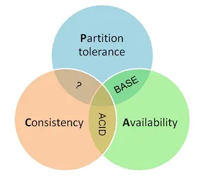

基本概念
什么是事务？
事务提供一种机制将一个活动涉及的所有操作纳入到一个不可分割的执行单元，组成事务的所有操作只有在所有操作均能正常执行的情况下方能提交，只要其中任一操作执行失败，都将导致整个事务的回滚。简单地说：事务提供一种“要么什么都不做，要么做全套（All or Nothing）”机制。
举个生活中的例子：你去小卖铺买东西“一手交钱，一手交货”就是一个事务的例子，交钱和交货必须全部成功，事务才算成功，任一个活动失败，事务将撤销所有已成功的活动。
本地事务
在计算机系统中，更多的是通过关系型数据库来控制事务，这是利用数据库本身的事务特性来实现的，因此叫数据库事务，由于应用主要靠关系数据库来控制事务，而数据库通常和应用在同一个服务器，所以基于关系型数据库的事务又被称为本地事务。
数据库事务的四大特性 ACID：
- A（Atomic）：原子性，构成事务的所有操作，要么都执行完成，要么全部不执行，不可能出现部分成功部分失败的情况。
- C（Consistency）：一致性，在事务执行前后，数据库的一致性约束没有被破坏。比如：张三向李四转100元，转账前和转账后的数据是正确状态这叫一致性，如果出现张三转出100元，李四账户没有增加100元这就出现了数据错误，就没有达到一致性。
- I（Isolation）：隔离性，数据库中的事务一般都是并发的，隔离性是指并发的两个事务的执行互不干扰，一个事务不能看到其他事务运行过程的中间状态。通过配置事务隔离级别可以避脏读、重复读等问题。
- D（Durability）：持久性，事务完成之后，该事务对数据的更改会被持久化到数据库，且不会被回滚。数据库事务在实现时会将一次事务涉及的所有操作全部纳入到一个不可分割的执行单元，该执行单元中的所有操作要么都成功，要么都失败，只要其中任一操作执行失败，都将导致整个事务的回滚。
分布式事务
随着互联网的快速发展，软件系统由原来的单体应用转变为分布式应用，下图描述了单体应用向微服务的演变：

分布式系统会把一个应用系统拆分为可独立部署的多个服务，因此需要服务与服务之间远程协作才能完成事务操作，这种分布式系统环境下由不同的服务之间通过网络远程协作完成事务称之为分布式事务，例如用户注册送积分事务、创建订单减库存事务，银行转账事务等都是分布式事务。
分布式事务产生的场景
- 典型的场景就是微服务架构微服务之间通过远程调用完成事务操作。比如：订单微服务和库存微服务，下单的同时订单微服务请求库存微服务减库存。 简言之：跨JVM进程产生分布式事务。

- 单体系统访问多个数据库实例当单体系统需要访问多个数据库（实例）时就会产生分布式事务。比如：用户信息和订单信息分别在两个MySQL实例存储，用户管理系统删除用户信息，需要分别删除用户信息及用户的订单信息，由于数据分布在不同的数据实例，需要通过不同的数据库链接去操作数据，此时产生分布式事务。简言之：跨数据库实例产生分布式事务。

- 多服务访问同一个数据库实例比如：订单微服务和库存微服务即使访问同一个数据库也会产生分布式事务，原因就是跨JVM进程，两个微服务持有了不同的数据库链接进行数据库操作，此时产生分布式事务。

分布式事务基础理论
CAP原则
CAP原则又被称作布鲁尔定理（Brewer’s theorem），它指出对于一个分布式系统来说，在Consistency（一致性）、 Availability（可用性）、Partition tolerance（分区容错性）这三点中只能同时满足两点：

| 条件 | 描述 |
|---|---|
| Consistency（一致性） | 指数据在多个副本之间能够保持一致的特性（严格的一致性） |
| Availability（可用性） | 指系统提供的服务必须一直处于可用的状态，每次请求都能获取到非错的响应（不保证获取的数据为最新数据） |
| Partition tolerance（分区容错性） | 分布式系统在遇到任何网络分区故障的时候，仍然能够对外提供满足一致性和可用性的服务，除非整个网络环境都发生了故障 |
CAP是一个已经被证实的理论：一个分布式系统最多只能同时满足一致性（Consistency）、可用性（Availability）和分区容忍性（Partition tolerance）这三项中的两项。它可以作为我们进行架构设计、技术选型的考量标准。对于多数大型互联网应用的场景，结点众多、部署分散，而且现在的集群规模越来越大，所以节点故障、网络故障是常态，而且要保证服务可用性达到N个9（99.99..%），并要达到良好的响应性能来提高用户体验，因此一般都会做出如下选择：保证P和A，舍弃C强一致，保证最终一致性。
BASE原则
BASE 是 Basically Available（基本可用）、Soft state（软状态）和 Eventually consistent（最终一致性）三个词语的缩写，BASE理论是对CAP中AP的一个扩展，通过牺牲强一致性来获得可用性，当出现故障允许部分不可用但要保证核心功能可用，允许数据在一段时间内是不一致的，但最终达到一致状态。
| 条件 | 描述 |
|---|---|
| Basically Available（基本可用） | 分布式系统在出现故障时，允许损失部分可用功能，保证核心功能可用。 |
| Soft state（软状态） | 允许系统中的数据存在中间状态，并认为该状态不影响系统的整体可用性，即允许系统在多个不同节点的数据副本存在数据延时。 |
| Eventually consistent（最终一致性） | 最终一致是指经过一段时间后，所有节点数据都将会达到一致。 |
BASE理论面向的是大型高可用、可扩展的分布式系统。与传统ACID特性相反，不同于ACID的强一致性模型，BASE提出通过牺牲强一致性来获得可用性，并允许数据段时间内的不一致，但是最终达到一致状态。同时，在实际分布式场景中，不同业务对数据的一致性要求不一样。因此在设计中，ACID和BASE理论往往又会结合使用。
分布式事务的解决方案
DTP模型
由于全局事务是基于DTP模型实现的在解释全局事务之前，我们需要先了解一下DTP模型，它规定了要实现分布式事务需要三种角色：
- AP（Application Program）：即应用程序，可以理解为使用DTP分布式事务的程序。
- RM（Resource Manager）：即资源管理器，可以理解为事务的参与者，一般情况下是指一个数据库实例，通过资源管理器对该数据库进行控制，资源管理器控制着分支事务。
- TM（Transaction Manager）：事务管理器，负责协调和管理事务，事务管理器控制着全局事务，管理事务生命周期，并协调各个RM。全局事务是指分布式事务处理环境中，需要操作多个数据库共同完成一个工作，这个工作即是一个全局事务。
DTP模型定义TM和RM之间通讯的接口规范叫XA，简单理解为数据库提供的2PC接口协议，基于数据库的XA协议来实现2PC又称为XA方案。
以上三个角色之间的交互方式如下：
- TM向AP提供 应用程序编程接口，AP通过TM提交及回滚事务。
- TM交易中间件通过XA接口来通知RM数据库事务的开始、结束以及提交、回滚等。
2PC
2PC即两阶段提交协议又称全局事务，两阶段提交是一种强一致性设计，2PC 引入一个事务协调者的角色来协调管理各参与者（也可称之为各本地资源）的提交和回滚，二阶段（Two-phase commit）分别指的是准备（投票）和提交两个阶段。
注意这只是协议或者说是理论指导，只阐述了大方向，具体落地还是有会有差异的。
让我们来看下两个阶段的具体流程。
准备阶段协调者会给各参与者发送准备命令，你可以把准备命令理解成除了提交事务之外啥事都做完了。
同步等待所有资源的响应之后就进入第二阶段即提交阶段（注意提交阶段不一定是提交事务，也可能是回滚事务）。
假如在第一阶段所有参与者都返回准备成功，那么协调者则向所有参与者发送提交事务命令，然后等待所有事务都提交成功之后，返回事务执行成功。
让我们来看一下流程图：

假如在第一阶段有一个参与者返回失败，那么协调者就会向所有参与者发送回滚事务的请求，即分布式事务执行失败。

如果第二阶段提交失败的话，会有两种情况：
- 第二阶段执行的是回滚事务操作，那么答案是不断重试，直到所有参与者都回滚了，不然那些在第一阶段准备成功的参与者会一直阻塞着。
- 第二阶段执行的是提交事务操作，那么答案也是不断重试，因为有可能一些参与者的事务已经提交成功了，这个时候只有一条路，就是头铁往前冲，不断的重试，直到提交成功，到最后真的不行只能人工介入处理。
大体上二阶段提交的流程就是这样，我们再来看看细节：
首先 2PC 是一个同步阻塞协议，像第一阶段协调者会等待所有参与者响应才会进行下一步操作，当然第一阶段的协调者有超时机制，假设因为网络原因没有收到某参与者的响应或某参与者挂了，那么超时后就会判断事务失败，向所有参与者发送回滚命令。
在第二阶段协调者的没法超时，因为按照我们上面分析只能不断重试！
2PC 是一种尽量保证强一致性的分布式事务，因此它是同步阻塞的，而同步阻塞就导致长久的资源锁定问题，总体而言效率低，并且存在单点故障问题，在极端条件下存在数据不一致的风险。
当然具体的实现可以变形，而且 2PC 也有变种，例如 Tree 2PC、Dynamic 2PC。
2PC 适用于数据库层面的分布式事务场景，而我们业务需求有时候不仅仅关乎数据库，也有可能是上传一张图片或者发送一条短信。
而且像 Java 中的 JTA 只能解决一个应用下多数据库的分布式事务问题，跨服务了就不能用了。
简单说下 Java 中 JTA，它是基于XA规范实现的事务接口，这里的 XA 你可以简单理解为基于数据库的 XA 规范来实现的 2PC。
3PC
三阶段提交协议（3PC）主要是为了解决两阶段提交协议的阻塞问题，2PC存在的问题是当协作者崩溃时，参与者不能做出最后的选择。因此参与者可能在协作者恢复之前保持阻塞。三阶段提交（Three-phase commit），是二阶段提交（2PC）的改进版本。
与两阶段提交不同的是，三阶段提交有两个改动点：
- 引入超时机制。同时在协调者和参与者中都引入超时机制。
- 在第一阶段和第二阶段中插入一个预提交阶段，保证了在最后提交阶段之前各参与节点的状态是一致的。
也就是说，除了引入超时机制之外，3PC 把 2PC 的提交阶段再次一分为二，这样三阶段提交就有CanCommit、PreCommit、DoCommit三个阶段。

不管哪一个阶段有参与者返回失败都会宣布事务失败，这和 2PC 是一样的（当然到最后的提交阶段和 2PC 一样只要是提交请求就只能不断重试）。
CanCommit阶段
之前2PC的一阶段是本地事务执行结束后，最后不Commit，等其它服务都执行结束并返回Yes，因此不会一来就干活直接锁资源，使得在某些资源不可用的情况下所有参与者都阻塞着，由协调者发生commit才真正执行commit，而这里的CanCommit指的是尝试获取数据库锁如果可以，就返回Yes。
该阶段主要分为两步：
- 事务询问：协调者向参与者发送CanCommit请求，询问是否可以执行事务提交操作，然后开始等待参与者的响应。
- 响应反馈：参与者接到CanCommit请求之后，正常情况下，如果其自身认为可以顺利执行事务，则返回Yes响应，并进入预备状态，否则反馈No。
PreCommit阶段
CanCommit阶段的引入起到了一个统一状态的作用，如果所有的参与者都返回Yes的话，那么就会进入PreCommit阶段进行事务预提交。
这里的PreCommit阶段跟CanCommit阶段是差不多的，只不过这里协调者和参与者都引入了超时机制（2PC中只有协调者可以超时，参与者没有超时机制）。
参与者引入超时机制的影响：
- 我们知道 2PC 是同步阻塞的，如果协调者挂在了提交请求还未发出去的时候是最伤的，所有参与者都已经锁定资源并且阻塞等待着，那么引入了超时机制，参与者就不会傻等了，如果是等待提交命令超时，那么参与者就会提交事务了，因为都到了这一阶段了大概率是提交的，如果是等待预提交命令超时，那该干啥就干啥了，反正本来啥也没干。
- 然而超时机制也会带来数据不一致的问题，比如在等待提交命令时候超时了，参与者默认执行的是提交事务操作，但是有可能执行的是回滚操作，这样一来数据就不一致了。
DoCommit阶段
与2PC的第二阶段差不多。
TCC
TCC是Try、Confirm、Cancel三个词语的缩写，TCC要求每个分支事务实现三个操作：预处理Try、确认Confirm、撤销Cancel。

TCC分为三个阶段：
- Try 阶段是做业务检查一致性及资源预留（隔离），此阶段仅是一个初步操作，它和后续的Confirm一起才能真正构成一个完整的业务逻辑。
- Confirm 阶段是做确认提交，Try阶段所有分支事务执行成功后开始执行Confirm。通常情况下，采用TCC则认为Confirm阶段是不会出错的。即：只要Try成功，Confirm一定成功。若Confirm阶段真的出错了，需引入重试机制或人工处理。
- Cancel 阶段是在业务执行错误需要回滚的状态下执行分支事务的业务取消，预留资源释放。通常情况下，采用TCC则认为Cancel阶段也是一定成功的，若Cancel阶段真的出错了，需引入重试机制或人工处理。
TCC模型还有个TM事务管理者的角色：
- TM事务管理器可以实现为独立的服务，也可以让全局事务发起方充当TM的角色，TM独立出来是为了成为公用组件，是为了考虑系统结构和软件复用。
- TM在发起全局事务时生成全局事务记录，全局事务ID贯穿整个分布式事务调用链条，用来记录事务上下文，追踪和记录状态，由于Confirm和cancel失败需进行重试，因此需要实现为幂等，幂等性是指同一个操作无论请求多少次，其结果都相同。
TCC的三种异常处理
空回滚
- 场景：在没有调用 TCC 资源 Try 方法的情况下，调用了二阶段的 Cancel 方法，Cancel 方法需要识别出这是一个空回滚，然后直接返回成功。
- 出现原因：当一个分支事务所在服务宕机或网络异常，分支事务调用记录为失败，这个时候其实是没有执行Try阶段，当故障恢复后，分布式事务进行回滚则会调用二阶段的Cancel方法，从而形成空回滚。
- 解决思路：关键就是要识别出这个空回滚，思路很简单就是需要知道一阶段是否执行，如果执行了，那就是正常回滚，如果没执行，那就是空回滚。前面已经说过TM在发起全局事务时生成全局事务记录，全局事务ID贯穿整个分布式事务调用链条。再额外增加一张分支事务记录表，其中有全局事务ID和分支事务ID，第一阶段 Try 方法里会插入一条记录，表示一阶段执行了。Cancel 接口里读取该记录，如果该记录存在，则正常回滚，如果该记录不存在，则是空回滚。
幂等
- 场景：为了保证TCC二阶段提交重试机制不会引发数据不一致，要求 TCC 的二阶段Try、Confirm 和 Cancel 接口保证幂等，这样不会重复使用或者释放资源。
- 影响：如果幂等控制没有做好，很有可能导致数据不一致等严重问题。
- 解决思路：在上述“分支事务记录”中增加执行状态，每次执行前都查询该状态。
悬挂
- 场景：悬挂就是对于一个分布式事务，其二阶段 Cancel 接口比 Try 接口先执行。
- 出现原因：出现原因是在 RPC 调用分支事务try时，先注册分支事务，再执行RPC调用，如果此时 RPC 调用的网络发生拥堵，通常 RPC 调用是有超时时间的，RPC 超时以后，TM就会通知RM回滚该分布式事务，可能回滚完成后，RPC 请求才到达参与者真正执行，而一个 Try 方法预留的业务资源，只有该分布式事务才能使用，该分布式事务第一阶段预留的业务资源就再也没有人能够处理了，对于这种情况，我们就称为悬挂，即业务资源预留后没法继续处理。
- 解决思路：如果二阶段执行完成，那一阶段就不能再继续执行。在执行一阶段事务时判断在该全局事务下，“分支事务记录”表中是否已经有二阶段事务记录，如果有则不执行Try。
小结
如果拿TCC事务的处理流程与2PC两阶段提交做比较，2PC通常都是在跨库的DB层面，而TCC则在应用层面的处理，需要通过业务逻辑来实现。这种分布式事务的实现方式的优势在于，可以让应用自己定义数据操作的粒度，使得降低锁冲突、提高吞吐量成为可能。
而不足之处则在于TCC对业务的侵入较大和业务紧耦合，业务逻辑的每个分支都需要实现try、confirm、cancel三个操作，此外，其实现难度也比较大，需要按照网络状态、系统故障等不同的失败原因实现不同的回滚策略。
可靠消息最终一致性
可靠消息最终一致性方案是指当事务发起方执行完成本地事务后并发出一条消息，事务参与方(消息消费者)一定能够接收消息并处理事务成功，此方案强调的是只要消息发给事务参与方最终事务要达到一致。
以利用消息中间件为例：事务发起方（消息生产方）将消息发给消息中间件，事务参与方从消息中间件接收消息，事务发起方和消息中间件之间，事务参与方（消息消费方）和消息中间件之间都是通过网络通信，由于网络通信的不确定性会导致分布式事务问题。
由于网络通信的不确定性导致的问题
本地事务与消息发送的原子性问题
事务发起方在本地事务执行成功后消息必须发出去，否则就丢弃消息，即实现本地事务和消息发送的原子性，要么都成功，要么都失败，本地事务与消息发送的原子性问题是实现可靠消息最终一致性方案的关键问题。
针对该问题一般会尝试以下两种操作：
- 先发送消息，再操作数据库：该情况下无法保证数据库操作与发送消息的一致性，因为可能发送消息成功，数据库操作失败。
- 先进行数据库操作，再发送消息：该情况下貌似没有问题，如果发送MQ消息失败，就会抛出异常，导致数据库事务回滚，但如果是超时异常，数据库回滚，但MQ其实已经正常发送了，同样会导致不一致。
事务参与方接收消息的可靠性问题
事务参与方必须能够从消息队列接收到消息，如果接收消息失败可以重复接收消息。
消息重复消费的问题
由于消费者集群的存在，若某一个消费节点超时但是消费成功，此时消息中间件会重复投递此消息，就导致了消息的重复消费，要解决消息重复消费的问题就要实现事务参与方的方法幂等性。
解决方案
本地消息表
本地消息表这个方案最初是eBay提出的，此方案的核心是通过本地事务保证数据业务操作和消息的一致性。

本地消息表顾名思义就是会有一张存放本地消息的表，一般都是放在数据库中，然后在执行业务的时候将业务的执行和将消息放入消息表中的操作放在同一个事务中，这样就能保证消息放入本地表中业务肯定是执行成功的。
然后再去调用下一个操作，如果下一个操作调用成功了好说，消息表的消息状态可以直接改成已成功，如果调用失败也没事，会有后台任务定时去读取本地消息表，筛选出还未成功的消息再调用对应的服务，服务更新成功了再变更消息的状态，这时候有可能消息对应的操作不成功，因此也需要重试，重试就得保证对应服务的方法是幂等的，而且一般重试会有最大次数，超过最大次数可以记录下报警让人工处理，可以看到本地消息表其实实现的是最终一致性，容忍了数据暂时不一致的情况。
RocketMQ事务消息方案
RocketMQ 就很好的支持了消息事务，让我们来看一下如何通过消息实现事务。

第一步先给 Broker 发送事务消息即半消息，半消息不是说一半消息，而是这个消息对消费者来说不可见，然后发送成功后发送方再执行本地事务。
再根据本地事务的结果向 Broker 发送 Commit 或者 RollBack 命令。
并且 RocketMQ 的发送方会提供一个反查事务状态接口，如果一段时间内半消息没有收到任何操作请求，那么 Broker 会通过反查接口得知发送方事务是否执行成功，然后执行 Commit 或者 RollBack 命令。
如果是 Commit 那么订阅方就能收到这条消息，然后再做对应的操作，做完了之后再消费这条消息即可。
如果是 RollBack 那么订阅方收不到这条消息，等于事务就没执行过。
可以看到通过 RocketMQ 还是比较容易实现的，RocketMQ 提供了事务消息的功能，我们只需要定义好事务反查接口即可。
RoacketMQ提供RocketMQLocalTransactionListener接口：
public interface RocketMQLocalTransactionListener {
/**
* 发送prepare消息成功此方法被回调，该方法用于执行本地事务
* @param msg 回传的消息，利用transactionId即可获取到该消息的唯一Id
* @param arg 调用send方法时传递的参数，当send时候若有额外的参数可以传递到send方法中，这里能获取到
* @return 返回事务状态，COMMIT：提交 ROLLBACK：回滚 UNKNOW：回调
*/
RocketMQLocalTransactionState executeLocalTransaction(Message msg, Object arg);
/**
* @param msg 通过获取transactionId来判断这条消息的本地事务执行状态
* @return 返回事务状态，COMMIT：提交 ROLLBACK：回滚 UNKNOW：回调
*/
RocketMQLocalTransactionState checkLocalTransaction(Message msg);
}小结
可靠消息最终一致性事务适合执行周期长且实时性要求不高的场景，引入消息机制后，同步的事务操作变为基于消息执行的异步操作, 避免了分布式事务中的同步阻塞操作的影响，并实现了两个服务的解耦。
最大努力通知
发起通知方通过一定的机制最大努力将业务处理结果通知到接收方。
具体包括：
- 有一定的消息重复通知机制，因为接收通知方可能没有接收到通知，此时要有一定的机制对消息重复通知。
- 消息校对机制，如果尽最大努力也没有通知到接收方，或者接收方消费消息后要再次消费，此时可由接收方主动向通知方查询消息信息来满足需求。
最大努力通知与可靠消息一致性有什么不同？
- 解决方案思想不同
可靠消息一致性，发起通知方需要保证将消息发出去，并且将消息发到接收通知方，消息的可靠性关键由发起通知方来保证。
最大努力通知，发起通知方尽最大的努力将业务处理结果通知为接收通知方，但是可能消息接收不到，此时需要接收通知方主动调用发起通知方的接口查询业务处理结果，通知的可靠性关键在接收通知方。 - 两者的业务应用场景不同
可靠消息一致性关注的是交易过程的事务一致，以异步的方式完成交易。
最大努力通知关注的是交易后的通知事务，即将交易结果可靠的通知出去。 - 技术解决方向不同
可靠消息一致性要解决消息从发出到接收的一致性，即消息发出并且被接收到。
最大努力通知无法保证消息从发出到接收的一致性，只提供消息接收的可靠性机制。可靠机制是，最大努力的将消息通知给接收方，当消息无法被接收方接收时，由接收方主动查询消息（业务处理结果）。
总结
可以看出 2PC 和 3PC 是一种强一致性事务，不过还是有数据不一致，阻塞等风险，而且只能用在数据库层面。
而 TCC 是一种补偿性事务思想，适用的范围更广，在业务层面实现，因此对业务的侵入性较大，每一个操作都需要实现对应的三个方法。
本地消息、事务消息和最大努力通知其实都是最终一致性事务，因此适用于一些对时间不敏感的业务。
参考资料
敖丙-分布式事务
https://blog.csdn.net/qq_35190492/article/details/108000380
漫画算法-什么是分布式事务？
https://blog.csdn.net/bjweimengshu/article/details/79607522
咖啡拿铁-再有人问你分布式事务，把这篇扔给他
https://juejin.cn/post/6844903647197806605
零壹技术栈-BASE理论
https://juejin.cn/post/6844903621495095304